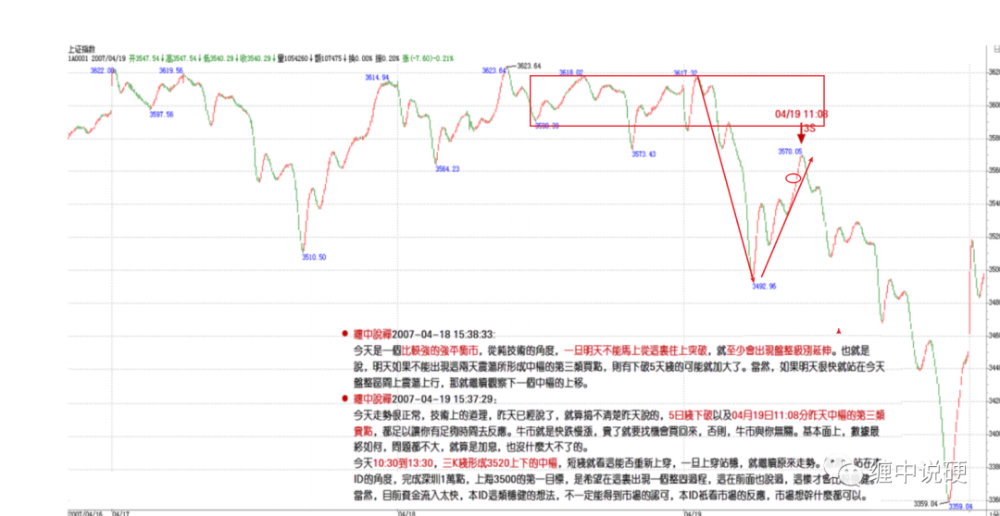
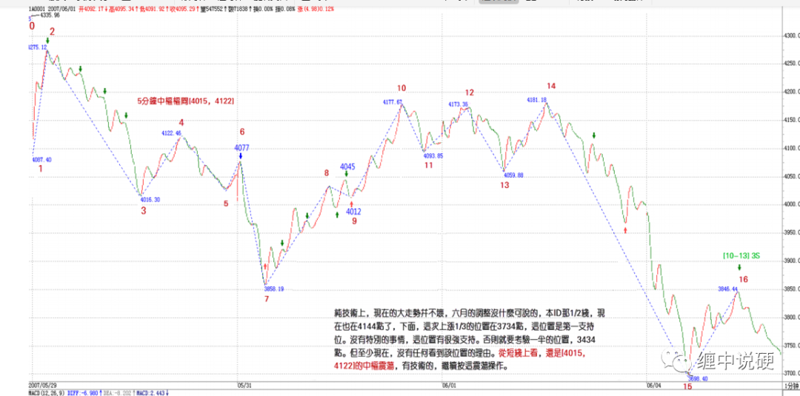
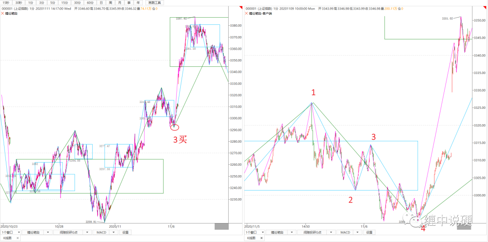

如何精确定义缠论的第三类买卖点
原文中对第三类买卖点的定义很简单：次级别离开，次级别返回，不回到第三类买卖点即形成。然而实际操作起来，却是模糊又模糊。
我总结第三类买卖点的判断标准如下：
1：同级别分解中必须符合，次级别离开和次级别返回；
2：在非同级别分解中，必须可以分解成如下三种情况（以下三种情况，盘整级别必须大于趋势）：
2.1：趋势+盘整；
2.2：趋势+反趋势；
2.3：盘整+反趋势。
3：第三类买卖点，必然是次次级别第一类买点。
原文示例：




同级别分解应该都能做好，非同级别分解应该也问题不大，关键问题是次次级别第一类买点怎么寻找。
如上图：本级别是1分钟递归的5分钟走势类型；次级别是1分钟段的走势类型；次次级别是1分钟笔的走势类型。
如果要确认5分钟第三类买点，核心有三点：
1：同级别分解符合；（显然符合）
2：非同级别符合；（显然符合）
3：次次级别第一类买点有。（如上图，在12都满足的条件下，1分钟段盘被，34内笔盘被即课认为次次级别第一类买点成立。）